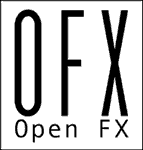

|  |
| OFX Association Website |
| Sourceforge Main Page |
| API Documentation |
|
|
OpenFX : An Open Plug-in API for 2D Visual Effects
OpenFX What Is It
OpenFX is an open standard for visual effects plug-ins. It allows plug-ins written to the standard to work on any application that supports the standard. This avoids the current per application fragmentation of plug-in development and support, which causes much heartache to everyone, plug-in developers, application developers and end users alikeOpenFX Aims
The core aims of OpenFX were established early on, these are...- to develop a standard for writing visual effects plug-ins,
- to develop that standard with a broad consensus within the industry,
- have that standard be vendor and operating system neutral,
- have that standard be sufficiently flexible that it supports a wide range of visual effects systems, from editors to compositors.
- have the standard be expandable to other areas in the future, for example sound plug-ins or image i/o plug-ins,
- have any expansion of the standard be done in such a manner so that hosts can easily support plug-ins using differerent versions of the API,
- have plug-ins written to the standard be tunable to the host system they are running on,
- allow hosts to provide extra custom functionality to plugins that wish to use it.
Ownership
Initially owned by The Foundry and released under a BSD style license, the API was transfered to The Open Effects Association in 2009.The Association is a not for profit UK Limited Company controlled by various organisation active in developing software for visual effects.
Many companies have developed or are now developing plugins and hosts using the API and real work is being done with them. OFX is a reality in the visual effects industry.
OpenFX Licensing
The OpenFX standard is owned by The Open Effects Association, and it is released under a 'BSD' open source license. This allows anyone to use it for any purpose without charge. For more details, see the license at the top of any of the header files.Mailing Lists
There are several mailing lists for the API and the OFX Association, these are currently being managed by The Foundry and are...- OFX Announcements used for be posting concerning API revisions and changes, this is a moderated list, not everyone can post,
- OFX Discussion for general OFX discussion, anyone can post,
- OFX 2.0 Committee used by members of the OFX review committee to discuss API extensions and changes, only committee members can post.